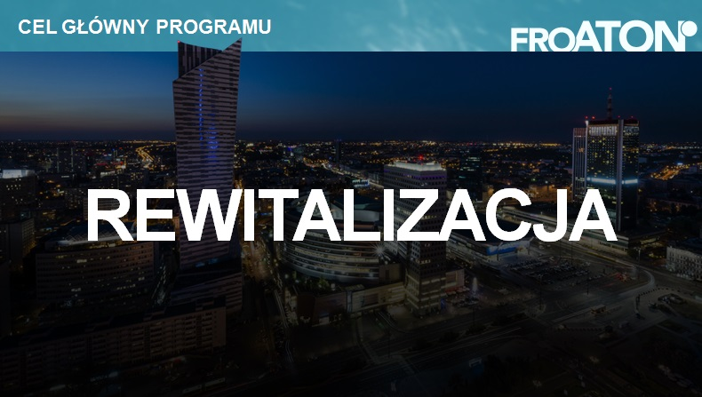

Darmowy audyt oświetleniowy dla Członków Aglomeracji Zielonogórskiej
Stowarzyszenie Aglomeracja Zielonogórska wspólnie z Fundacją Rewitalizacji Oświetlenia ATON - oferuję Członkom Aglomeracji Zielonogórskiej kompleksowe wsparcie w zakresie rewitlalizacji oświetlenia.
W ramach programu jednostka samorządu terytorialnego może uzyskać bezpłatną kalkulację systemu oświetlenia ulicznego lub użytkowego, z określeniem przewidywanych ilości potrzebnych źródeł, opraw i ich mocy oraz siły strumienia. Zostaną również wskazane potencjalne oferty dostępne na rynku, spełniające założenia projektowe i tym samym gwarantujące uzyskanie przewidywanych w projekcie efektów ekonomicznych i jakościowych, oraz sposoby finansowania projektów rewitalizacji.
Otrzymane dane pozowlą JST na podjęcie kluczowych decyzji odnośnie modernizacji oświetlenia ulicznego i użytkowego na swoim terenie.

W przypadku zainteresowaniem programem rewitalizacji oświetlenia - prosimy o kontakt z biurem Stowarzyszenia "Aglomeracja Zielonogórska".